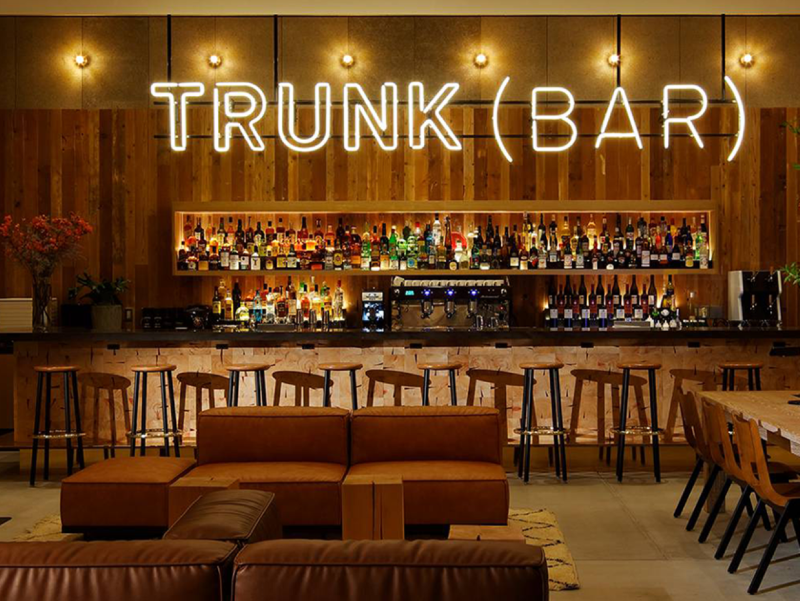
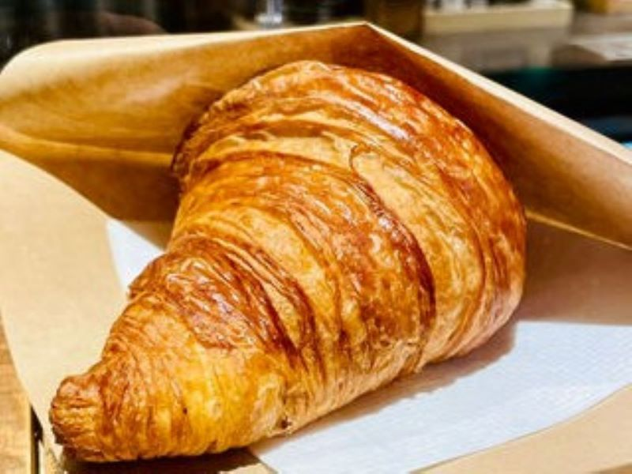
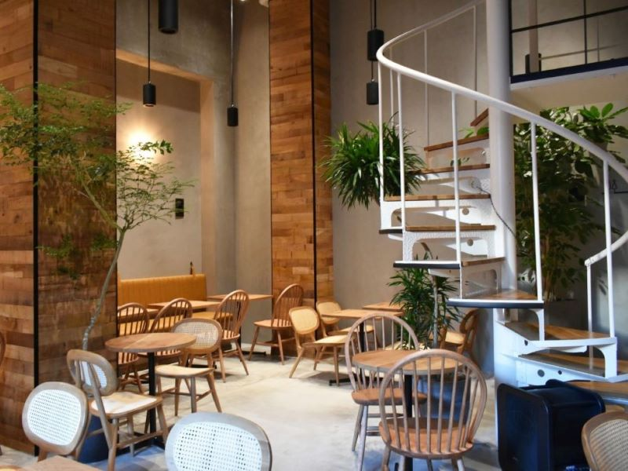
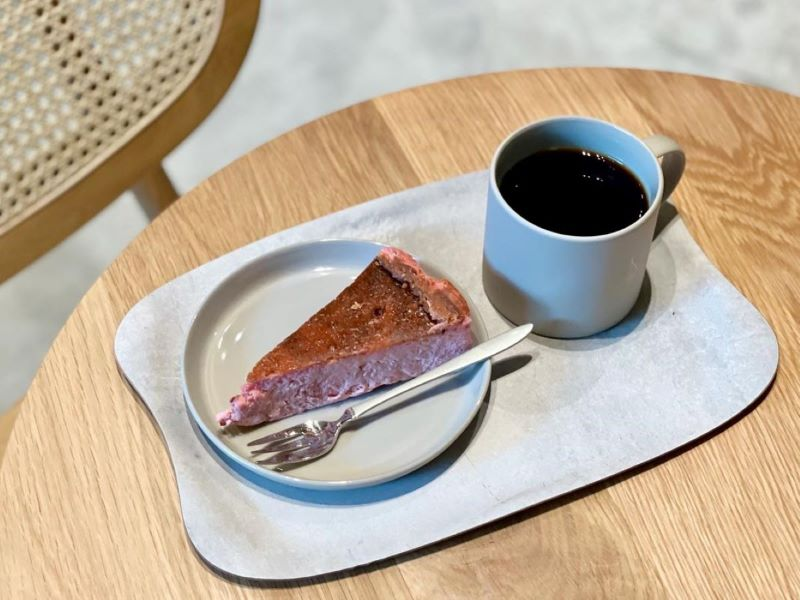

ホテルに併設されているカフェ＆バーです。
多くの人がPCで作業しており、ノマドカフェとして利用しやすい雰囲気です。
1.TRUNK CAFE

ふんわり食感「クロワッサン」

おすすめのメニューは、クロワッサンです。
スペシャルなアールグレイブリューと一緒にいかがですか。
「TRUNK CAFE」の基本情報
| 定休日 | 不定休 |
|---|---|
| 営業時間 | 9:00-23:00 |
| アクセス | 明治神宮駅（徒歩6分）渋谷駅（徒歩7分） |
| 地図 |
| 定休日 | 土日祝日 |
|---|---|
| 営業時間 | 8:00-19:00 |
| アクセス | 渋谷駅直結 |
| 地図 |
| 定休日 | なし |
|---|---|
| 営業時間 | 10:00-20:00 |
| アクセス | 中目黒駅（徒歩4分） |
| 地図 |
4.GOOD SOUND COFFEE

avexが手がけた音に包まれるコーヒーショップです。
音響がとても良く、作業もはかどること間違いなしです。
ケーキメニューも充実「バスクチーズケーキ」

おすすめのメニューは、バスクチーズケーキです。
特に、ベリーのフレーバーがさっぱりした酸味で食べやすかったです。
「GOOD SOUND COFFEE」の基本情報
| 定休日 | 不定休 |
|---|---|
| 営業時間 | 8:00-23:00 |
| アクセス | 中目黒駅（徒歩7分） |
| 地図 |